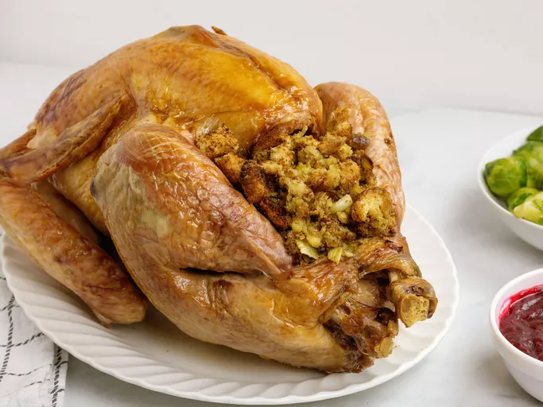

Home
Stuffed Turkey

Stuffed turkey.
Ingredients
- Turkey (12 lb, if your bird is larger or smaller, you'll need to adjust your cooking time.)
- Stuffing mix
- Butter
- Vegetables
- Bread
- Seasonings
- Oil
Steps
- Prepare turkey: Remove and discard the giblets.
Pat the turkey dry with paper towels and place it in a roasting pan.
- Prepare stuffing: Bring the water and butter to a boil.
Stir in the stuffing mix, cover, remove from heat, and let rest for 5 minutes.
Meanwhile, cook the celery and onion in butter.
Add the cooked veggies to the stuffing. Stir in bread pieces, salt, and pepper.
- Stuff turkey: Stuff the bread mixture into the body and neck cavities of the turkey. Rub the skin with vegetable oil.
- Roast turkey: Loosely cover the bird with aluminum foil.
Roast the stuffed turkey in a preheated oven until the thickest part of the thigh reaches 180 degrees F
and the interior of the stuffing reaches 165 degrees F.
Remove the foil during the last 30 minutes of roasting to brown the skin.
- Enjoy!